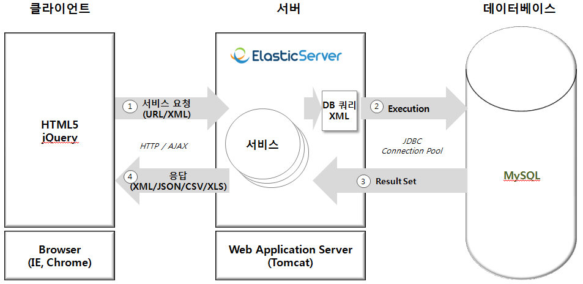

Examples
테스트 테이블(T_TEST) 준비
테스트 테이블(T_TEST): 테이블 생성
테스트 테이블(T_TEST): 데이터 반복 입력 & 건수 조회
Built-in services
QueryService
DB 쿼리 한번 실행 - sample.mysql_select1
DB 쿼리 한번 실행 - sample.sql1
[Built-In] 트랜잭션 걸고 두 개의 DB 쿼리 수행 후 결과 받기
EchoService
Mobile AJAX JSONP
Scala Example
DB Query Service
DB 쿼리 한번 실행 - sample.sql1
트랜잭션 걸고 두 개의 DB 쿼리 수행 후 결과 받기
두 개의 DB 쿼리 수행 후 결과 받기
Session Service
Session 정보 조회
Session 정보 설정
Session 정보 삭제
Miscellaneous
Request 데이터 구하기 및 Response 데이터 만들기
응답을 List 객체로 하기
응답을 Map 객체로 하기
오류가 발생했을 때
Query Service
[Built-In] 테스트 테이블(T_TEST): 대용량 스트리밍 쿼리
Login Service
[Built-In] Session 유효시간(초) 설정
Curl
Remote: curl/start.curl
elastic-sample\curl\start.curl" data-ajax="false">Local: file:///<%= getServletContext().getRealPath("/") %>elastic-sample\curl\start.curl
WebSocket Service
[Built-In] WebSocket
Background Scheduling Job Service
[Built-In] DB 쿼리를 수행하는 백그라운드 스케줄 작업 등록
[Built-In] 시스템 명령어를 수행하는 백그라운드 스케줄 작업 등록
[User Defined] 백그라운드 스케줄 작업 프로그램 작성 및 등록
Miscellaneous
[User Defined] Request 데이터 구하기 및 Response 데이터 만들기
[User Defined] 응답을 List 객체로 하기
[User Defined] 응답을 Map 객체로 하기
[User Defined] 오류가 발생했을 때
[User Defined] XML 파일의 엘리먼트 값 읽기
[User Defined] Resource Bundle
System Environment
